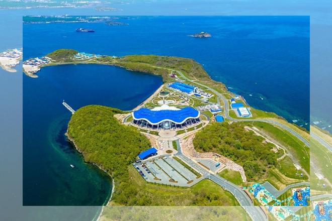

ОСТРОВ РУССКИЙ
Он находится всего в нескольких километрах от Владивостока. Его южная точка, мыс Тобизина, — одна из популярных достопримечательностей Приморского края. Туристов манят потрясающие виды моря, меняющего свой цвет от лазурного до тёмно-синего. Побывав здесь, можно утверждать, что посетили край Земли, — так называют установленную на вершине стелу с табличками городов и расстоянием до них.
По легенде, Русский — настоящий пиратский остров, скрывающий несметные сокровища. Китайские разбойники прятали здесь золото, а тех, кто его находил, проклинали. Возможно, в этом причина необъяснимых явлений, о которых рассказывают студенты ДВФУ: они часто видят призрака в комнатах кампуса, а по ночам слышат странные голоса.
Долгое время остров имел статус закрытой территории, здесь располагались укрепления Владивостокской крепости и множество воинских частей. Остров являлся крупной учебной базой всего военно-морского флота СССР. После распада СССР на острове был создан оздоровительный комплекс «Белый лебедь». А в 2002 году на острове был основан Свято-Серафимовский мужской монастырь.
Все это время на остров можно было попасть только водным путем, паромы осуществляли регулярные рейсы, исключая дни непогоды. А в 2012 году, наконец-то был построен Русский мост, который соединил остров с материковой частью Владивостока. Сейчас на острове расположен Дальневосточный федеральный университет, Приморский океанариум.
